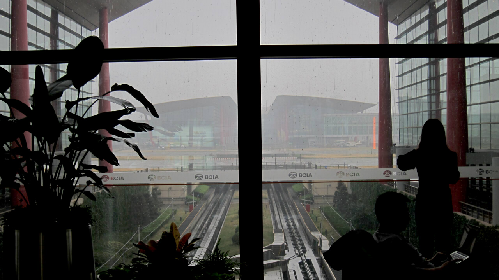
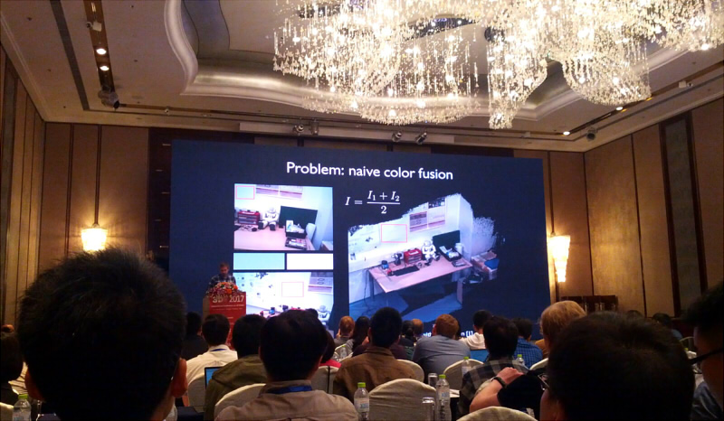
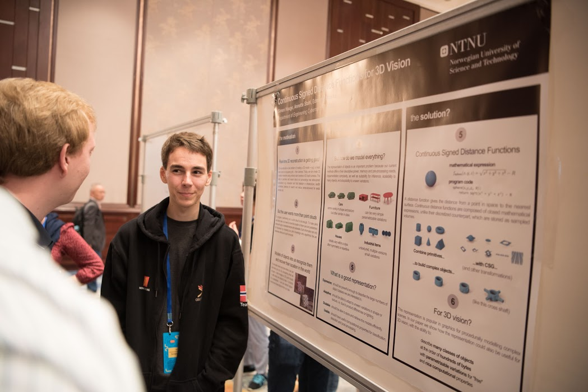

In October, I went to China for the International Conference on 3D Vision, lugging along an inconventiently large poster and a small backpack.

The calm and spacious terminal 3 in Beijing airport was much appreciated after 20 hours of travel, although it would be another 6 hours until I got to the hotel.
At the conference I presented my work in poster format. A smaller number of people also got the opportunity to present their work in a stage presentation. The presentations varied in length, a few being twenty minutes long, and some as short as five minutes.

The conference was set up with a main room for presentations. Each day began with a keynote by an invited speaker, followed by selected contributors presenting their work, and then maybe a panel session. Interspersed between the presentations were poster sessions, and coffee breaks to stretch your legs and talk with people.
One aspect that was peculiar about this conference was that there was only one "track". Usually, in larger conferences (like CVPR for computer vision or IROS for robotics), there are multiple tracks of presentations in parallel, because they just have so many contributors. The upshot is that you get a lot of content, but the downside is that you have to choose which one to attend!

Each poster session had around twenty presenters standing in front of their poster. There were only about 50-80 people in the room, and dropping down to 10-30 near the end, so there was plenty of breathing space and opportunity to hog a presenter for yourself and ask them all of your burning questions.
I think the sessions were divided into themes, as the other posters during my slot were sort of touching on the same topics as me. This was somewhat unfortunate, because talking with people around my stand meant I was too busy to go talk with other presenters whose work might be closely related.
I learned some lessons:
Bring a demo
During my poster session I noticed the person next to me had their laptop out, running their neat body-and-pose estimation algorithm. This obviously caught everybody's attention (possibly to the detriment of their poster...). Seeing an algorithm work live and being able to interact with it is an experience that's hard to get from someone's paper or supplementary material. It would probably be a good idea to make sure I can always pull out a demo of my work and give it to people.
Use the Q&A to start discussions
Presentations usually leave a few minutes at the end for the audience to ask questions. What tends to happen is someone asks a technical question like "how did you do X?", and the speaker says "we discuss this in our paper", or someone asks "does your algorithm handle Y?", and the speaker gives an ambiguous answer because it depends on a lot of factors.
I don't think these kind of question make the best use of everyone's time. Instead of asking a question about some detail (that you could figure out on your own by reading their paper more closely or sending them an email), take advantage of the fact that the entire audience is forced to listen to your question, and view it as an opportunity to share an opinion, provoke thoughts and motivate future discussions.
Make yourself available
During the breaks, when I could have taken a nap in my room or mingled in the loud hallway, I decided to retire to myself in the relatively solemn main room. I realized this was actually a good thing, because (several) people came up to me, who said they had hesitated talking to me earlier because there was a crowd. I realized some people might be too shy to talk to you after your talk or during your poster session, which makes sense, because there's a pressure or fear that you steal other's opportunity to ask their questions, so you feel that you can't take up too much of the person's time (if any).
Ask yourself "What can I only do at this conference?"
I picked up this mantra and thought it applied generally well to many things like the above: Is this a question I can answer over email or by reading their paper? Or, is my presentation mostly still slides with equations and tables, despite being given a stage, spotlight, a captive audience, and a 400-inch TV-stack that can play audio and video? Then I might not be taking full advantage of the conference. (I did not have a presentation slot myself, but I much appreciated the speakers who used audio and video!).
Simen Haugo © 2017
BY-NC-SA 4.0